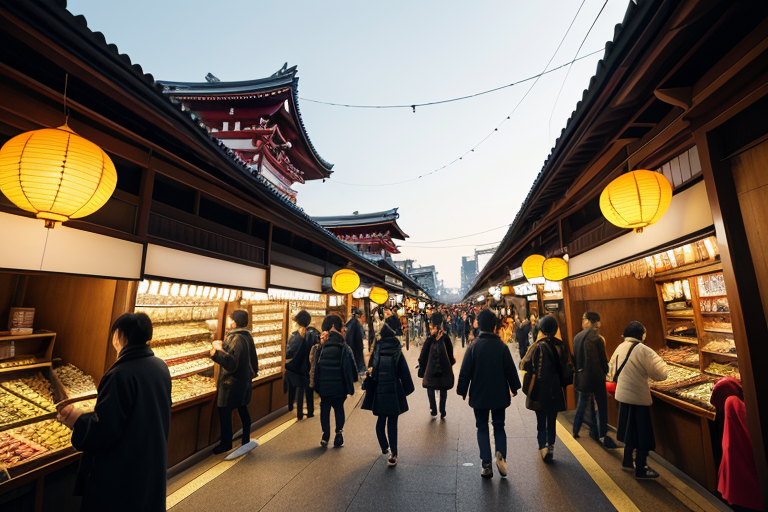
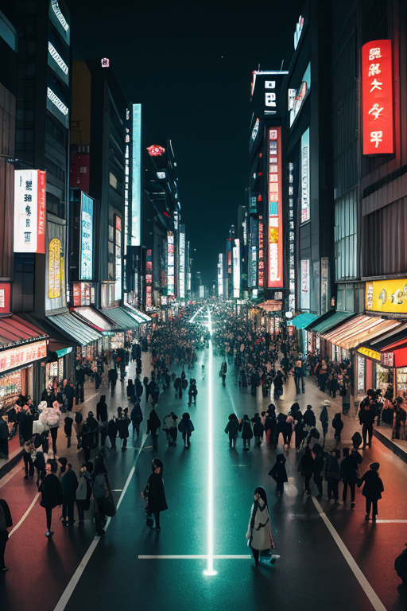
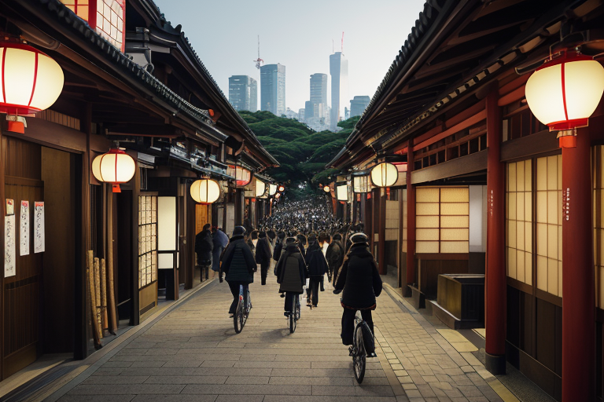
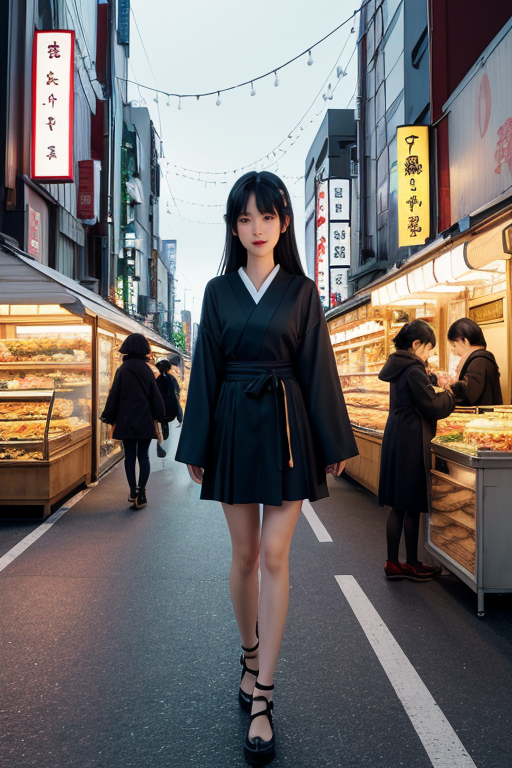
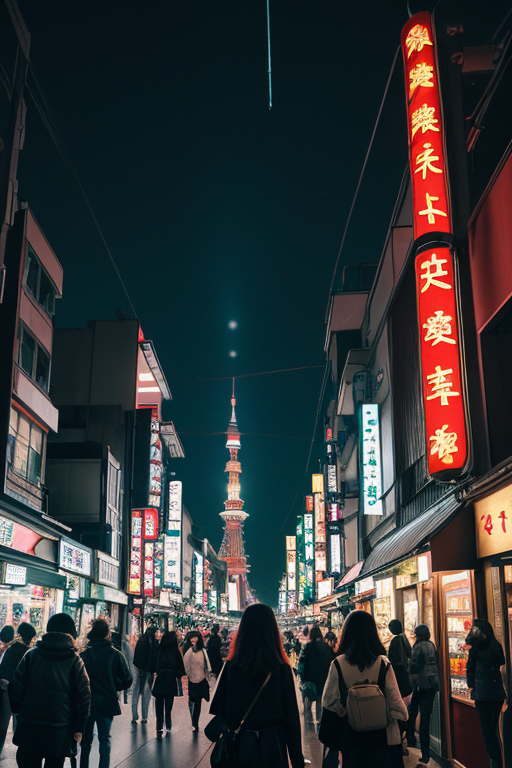

第一章 現実の東京
あなたはまだ気づいていない。この土地にも、王がいることを。
浅草寺の仲見世通りは、常に人の流れが途切れない。雷門の大提灯をくぐり、土産物屋の賑わいを抜けるその先で、王は立っていた。トキオニア・アークス。彼の目には、人々の欲望と焦りが、黒と金と赤の奔流として映る。買い物かごを抱えた観光客、次の予定を気にするビジネスマン、スマートフォンの画面に吸い込まれる若者。すべてが加速し、交錯し、この土地の「歪み」を生み出していた。
彼は手をかざす。掌から微かに金色の光が漏れ、人々の足取りをほんの一瞬、千分の一秒だけ緩める。転びそうになった老人が、隣の青年の腕に自然と支えられる。ぶつかりそうになった子供が、かすかな風に押され、危険を回避する。それは進化でも消耗でもない、ただの「調整」だ。王の感情はないはずだった。しかし、この雑踏が放つ焦燥の密度は、彼の胸の内に似たものを生じさせ始めていた。

第二章 歪みの兆候
渋谷スクランブル交差点を、人々の波が幾重にも交差する。クロノアークは交差点上空の見えない位置に浮かび、無数の時間の流れを監視していた。通勤者の足取りは速すぎ、観光客のそれは遅すぎる。この時間の「ずれ」が、小さな衝突や転倒の原因となる。妖精は微かな電気的刺激を人々の神経に送り、歩調をほんの少し調整する。事故は防げないが、その確率を下げることはできる。
浅草寺の仲見世通り。トキオニア・アークスは露店の陰に立ち、金銭の流れを見つめていた。観光客の財布から現金が滑り落ちそうになる瞬間、ほこりが舞い上がり、客が足を止めて財布を握り直す。欲望の奔流はこの街の原動力だが、時に歪みを生む。彼はその歪みを、目立たない偶然で補正していた。
しかし、補正の頻度が増していた。人々の焦りが、街そのものの振動数を上げている。それは進化なのか、それとも、ただの消耗なのか。王は、自身の胸に湧く焦燥と似た感情が、街の地下を流れる古い歪みと共鳴し始めていることを感じていた。

第三章 王の葛藤
明治神宮の森は、深い静寂に包まれていた。トキオニア・アークスは、鬱蒼とした木々の間に立ち、掌で地面の微かな震えを感じ取る。ここは、この加速する街の数少ない「間」だ。しかし、その静けさの下にも、関東大震災と大空襲が刻んだ深い歪みの断層が、ゆっくりと蠢いている。彼の役目は、その断層が暴走しないよう、人々の無意識の焦りや欲望の奔流が引き金とならないよう、微調整を続けることだ。
浅草寺の仲見世で、観光客が押し合い、落としたスマートフォンの画面が、かすかに傾いた屋根瓦に守られて割れずに済む。渋谷のスクランブル交差点で、ふと躓いた女子高生の前に、タイミングをずらした自転車が通り過ぎる。彼は、無数のそうした「間」を作り出していた。しかし、その行為自体が、彼自身に「もっと速く、もっと多く」という焦りを植え付けていた。効率化が使命の王が、効率化の果てに生まれる歪みを処理する。それは矛盾だった。
「これは消耗ですよ、陛下」
アークレアが、彼の肩に微かな電気の火花を散らして警告する。妖精の声は、彼自身の内なるブレーキのようだった。進化とは、ただ速くなることではない。速さの中に「間」を保つことかもしれない。王は、秋葉原のネオンの川を見下ろしながら、自身の焦燥と、守るべき街の鼓動の、危うい均衡を考え続けた。

第四章 妖精との対話
浅草寺の仲見世通り。人波は絶え間なく流れ、金銭と欲望の匂いが漂う。アークレアは露店の屋根の上に座り、その流れを無表情に見つめていた。「陛下は『速さ』を求めすぎます。でも、ここを見てください」
彼女が指さす先では、老舗の煎餅屋が一枚一枚、手焼きしていた。機械なら一瞬の工程に、ゆったりとした時間が流れる。「商いの本質は交換です。金と物、そして時間と満足。速さだけが交換価値ではない」
王は雑踏の中に立ち、妖精の言葉を咀嚼した。明治神宮の森と、スクランブル交差点。同じ東京の、異なる時間の密度。加速がもたらす利益と、それが削り取るもの。関東大震災も空襲も、この街は「再生」という名の加速で乗り越えてきた。しかし、その速度自体が新たな歪みを生んでいるとしたら。
「消耗か進化か」アークレアは呟いた。「その答えは、陛下がこの街の『間』を、どれだけ感じられるかです」王は、もんじゃを焼く家族の笑い声に、微かに耳を傾けた。

第五章 微調整と余韻
浅草寺の仲見世は、いつものように人で埋まっていた。加速王は、その雑踏の真ん中に立っていた。彼の目には、人々の動線が幾重にも重なる金色の軌跡として映る。交差点でぶつかりそうになった観光客のグループと地元の老人。王が指を微かに動かすと、老人の足がほんの一瞬、速度を落とした。かすかなタイミングのずれ。二人はぎりぎりで交差し、互いに会釈を交わして過ぎて行った。誰も気づかない調整だ。
秋葉原の電気街。信号待ちの群衆の中に、焦燥に駆られた少年の姿があった。遅刻しそうだ。彼が信号無視をしようとしたその瞬間、クロノアークが少年の腕時計の針を、ほんの一秒だけ進ませた。少年は「あ、まだ大丈夫だ」と呟き、踵を返した。アークレアが王の肩に触れる。「陛下、これで十分です。全てを加速で解決はできません」
王は東京タワーの展望台から街を見下ろした。ネオンの川、満員電車の光の列。この街の欲望と速度は、確かに歪みを生む。だが、その速度が生み出す熱量と、人々の生きる手応えもまた、真実だった。彼はもう、問いに一つの答えを出そうとはしなかった。進化か消耗か。その両方を抱え、微かに調整し続けること。それが、この歪みの列島の、欲望と加速の王国を守る意味だと、ようやく感じ始めていた。
あなたの町にも、王がいる。